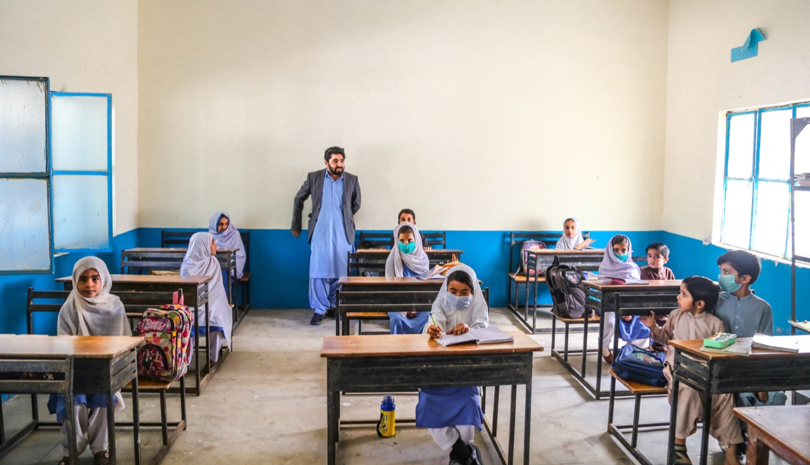
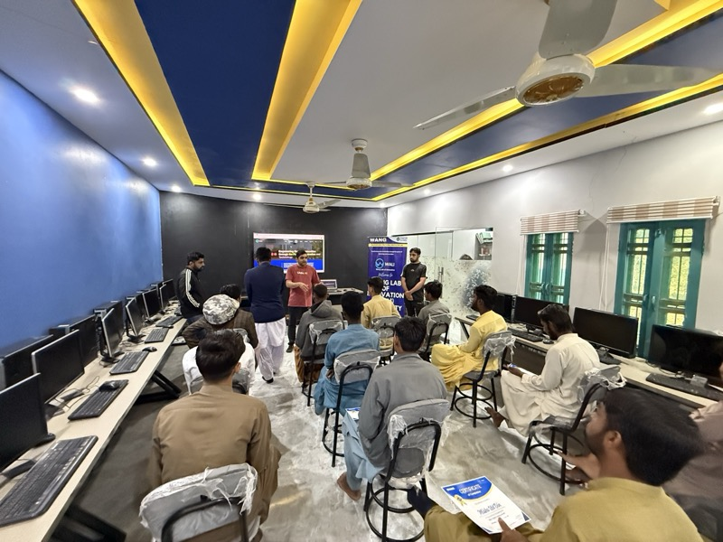

Digital literacy
Rural Balochistan needs a different digital-skills stack.
Pakistan’s largest online skilling platforms rightly optimize for scale — often in English, with a stable home connection assumed. WANG’s programs intentionally run where those assumptions break: Ahmed Abad Wang and surrounding Lasbela communities where travel, schedule, and household permission shape who can learn. This page explains the WALI-first model: cohort-based, Urdu-first, in-person, with backup schedules when power or floods disrupt life — and how it complements national platforms rather than competing on headcount alone.

Contrast
What “digital literacy Pakistan” misses at the village edge.
Mass open courses ≠ rural attendance
Enrollment curves on national portals do not measure whether a teenage girl in Bela can watch lectures uninterrupted, submit assignments from a shared phone, or get back on track after displacement from flooding. WANG designs for those edge cases first.
WALI is a physical guarantee
A lab with supervised hours, local facilitators, and peer cohorts solves trust and safety issues that pure-online cannot. Graduates can then use Urdu AI and partner tools on their own terms.
Connectivity evidence matters
PakSpeed crowdsources the same ISP reality WANG staff see daily — linking digital-literacy advocacy to measurable infrastructure gaps.

Journal
WALI and digital divide stories.
- WALI lab empowers youth — field overview.
- Tech surge — ten batches — cohort scale narrative.
- Mobiles, children, hope — devices and education continuity.
Also on this site
Focused page for first-time learners.
For a shorter introduction aimed at people discovering WANG’s digital literacy work for the first time, see the digital literacy overview. This page keeps the deeper Balochistan context, links, and background detail in one place.
Partners
Sponsor a cohort, equip a lab tranche, or co-design Urdu curricula.
WANG documents outcomes publicly and welcomes partnerships that need field visibility in Lasbela — not only LMS dashboards.